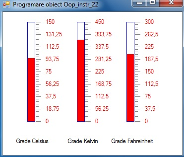
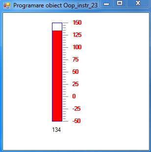
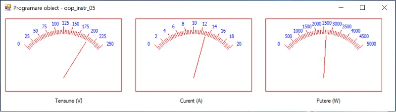
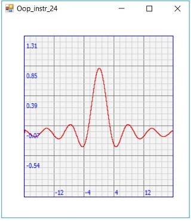
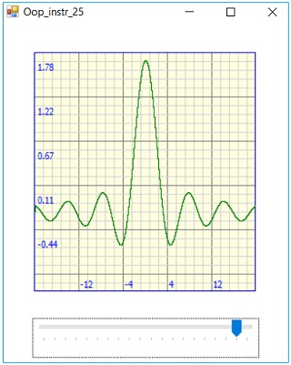
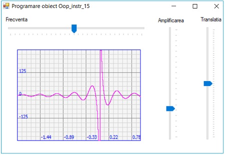
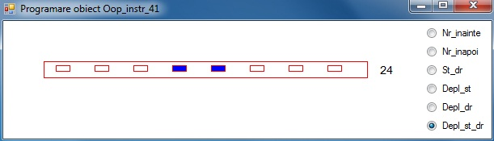
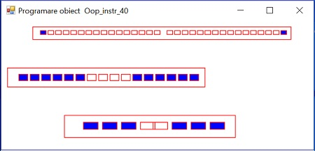

Utilizarea claselor pentru instrumentatia virtuala
Teme program
Pe baza clasei
termo
afisati dinamic temperatura intre 0-150 grade Celsius, si corespunzator in grade Kelvin, si in grade Fahrenheit

Modificati clasa
termo
si afisati dinamic temperatura intre -50 si 150 grade Celsius.

Pe baza clasei
voltm
afisati dinamic tensiunea in domeniul 0-250 V curentul in domeniul 0-20 A si puterea ca fiind produsul dintre tensiune si curent

Pe baza clasei
osciloscop
pentru trasarea graficelor x-t, afisati grafic functia
f(x)=sin(x)/x
unde x ∈[-20 ∸+20]

Adaugati un control trakBar pentru a controla amplificarea

Pe baza clasei
osciloscop
pentru trasarea graficelor x-t, afisati grafic functia
f(x)=cos(x)/x
unde x ∈[-2 ∸1]

Pe baza clasei
binar
pentru afisare binara afisati dinamic :

Pornind de la clasa
binar
pentru afisare binara, modificati clasa si afisati un joc de lumini care imita un vu-metru;
